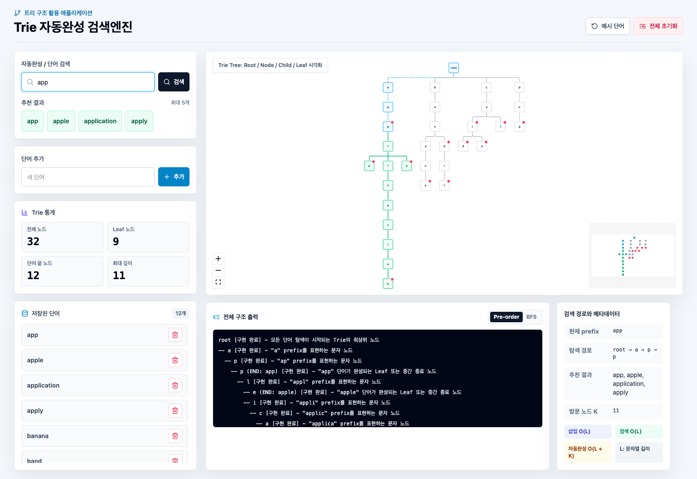
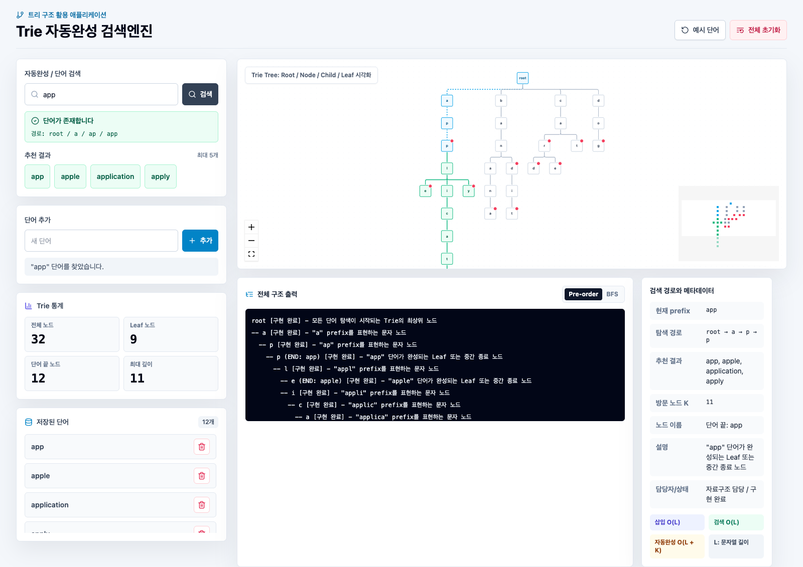
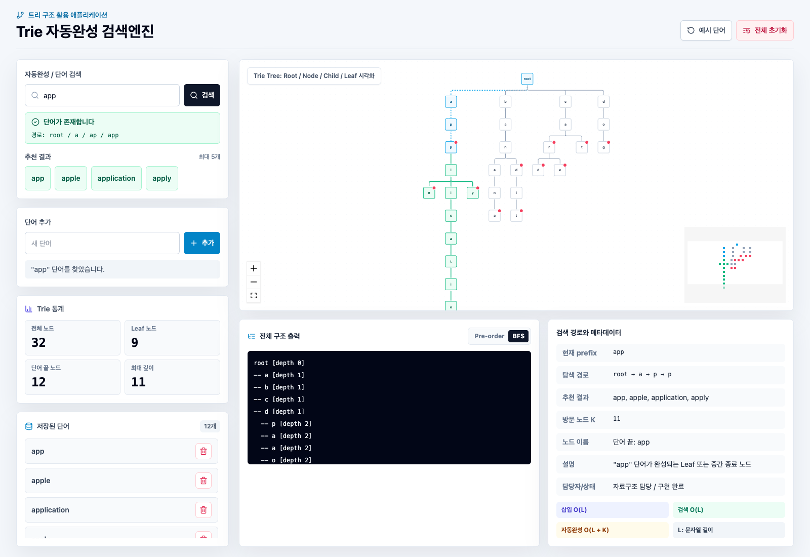

트리 자료구조의 한 종류인 Trie를 사용하여 단어를 문자 단위 노드로 저장하고, 삽입, 삭제, 검색, 자동완성, 전체 구조 출력, 통계, 시각화를 제공하는 웹 애플리케이션을 구현하였다.
비선형 자료구조인 Tree를 실제 애플리케이션에 적용하고, Root, Node, Child, Parent, Leaf 개념을 코드와 화면으로 확인한다.
Trie는 문자열을 문자 단위 노드로 저장하는 N-ary Tree이다. 각 노드는 여러 자식 문자를 가질 수 있어 자동완성 기능에 적합하다.
별표(*)는 단어 끝 노드이며, 같은 prefix를 가진 단어는 같은 경로를 공유한다.
각 노드는 문자, 경로, 메타데이터, 단어 끝 여부, 자식 배열을 가진다. 자식 수가 고정되지 않으므로 children 배열을 사용해 N-ary Tree 형태를 구현했다.
class TrieNode {
constructor(char = "root", path = "root") {
this.char = char;
this.path = path;
this.name = path === "root" ? "Root Node" : `문자 노드 '${char}'`;
this.description = `"${path}" prefix를 표현하는 문자 노드`;
this.owner = "자료구조 담당";
this.status = "구현 완료";
this.isEndOfWord = false;
this.children = [];
}
}
prefix 노드까지만 이동하면 그 하위 트리 전체가 추천 후보가 되므로 자동완성 구현이 자연스럽다.
app, apple, application처럼 같은 접두사를 가진 단어들이 같은 노드를 공유하여 구조적으로 표현된다.
| 기능 | 구현 방식 | 복잡도 |
|---|---|---|
| Insert | 단어의 문자를 하나씩 따라가며 없는 자식 노드를 생성 | O(L) |
| Delete | 단어 끝 표시를 해제하고 공유되지 않는 말단 노드 제거 | O(L) |
| Search | 문자 경로를 따라간 뒤 마지막 노드의 isEndOfWord 확인 | O(L) |
| Autocomplete | prefix 노드까지 이동 후 DFS로 추천 단어 수집 | O(L + K) |
| Pre-order | 현재 노드 출력 후 자식 노드를 재귀 방문 | O(N) |
| BFS | Queue로 같은 깊이의 노드를 먼저 방문 | O(N) |
L = 입력 문자열 길이, K = 추천 수집 중 방문한 노드 수, N = Trie 전체 노드 수

prefix 입력 시 추천 결과와 탐색 경로가 갱신되고, 오른쪽에서 Trie Tree가 시각화된다.

검색한 단어의 존재 여부, root부터의 경로, 노드 이름/설명/담당자/상태가 출력된다.

BFS 버튼을 누르면 Queue 기반 너비 우선 탐색 결과가 depth와 함께 출력된다.
본 프로젝트는 Trie라는 트리 자료구조를 사용하여 자동완성 검색엔진을 구현했다. 각 문자 노드는 자식 배열을 가지는 N-ary Tree 노드이며, 단어 삽입/삭제/검색/자동완성뿐 아니라 전위 탐색, BFS, 통계, 시각화 기능까지 구현하여 과제의 필수 요구사항을 만족한다.
src/trie.js, src/App.jsxreport/tree-structure-report.pdfreport/assets/01-trie-main.png, 02-word-search.png, 03-bfs-traversal.png